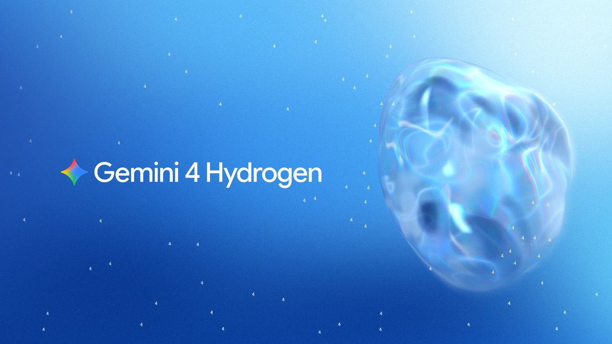
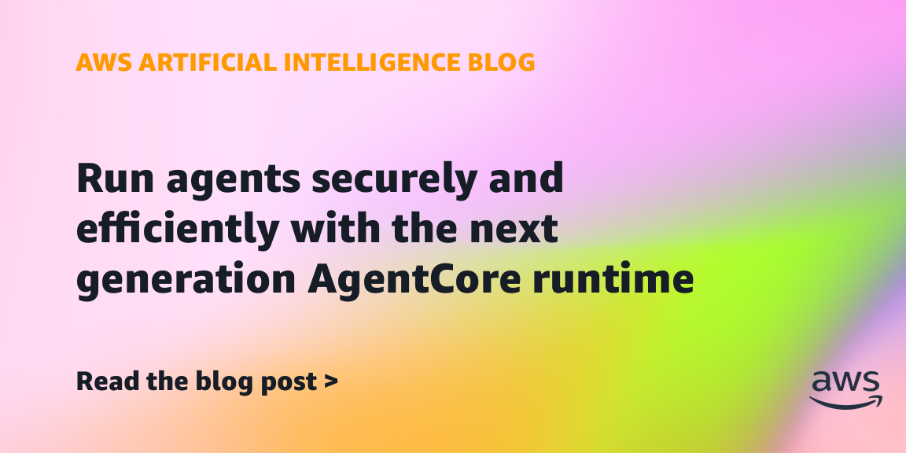

AI Intelligence Daily · 2026-11-13（周五）
统计窗口：2026-11-12 08:00 → 2026-11-13 08:00（上海 / Asia/Shanghai）· 事实与判断分区 · 国内/国际双轨 · 承接 Daily 11-12 与当日快讯（多轮 SILENT 后，23:27 PUSH NVIDIA CEO 过渡）· 过夜切片（约 15:31Z 之后）新发船：Gemini 4 Hydrogen + Antigravity Orchestrator、Bedrock AgentCore 下一代 Runtime、Claude 自托管 Managed Agents 私有预览、Claude Meetings beta、Claude Code 2.1.323、agent-desktop 1.3.0、Factory 1.10.0、Copilot CLI 1.0.110 · **一线 Desktop/CLI 功能发船 desktop_shipping = 3（Kimi Desktop 1.3.4 / CLI 2.6.0 · Factory CLI+Desktop 1.10.0 · Claude Code 2.1.323）** · 开源运行时另计：agent-desktop **1.3.0**（macOS VM sandbox）· 不计：Copilot 1.0.110（实验性密码框 + 大量 TUI 修复）· MiniMax CLI 0.7.7（PTC 新能力默认关闭）· Antigravity CLI 1.5.7（默认 Agent Mode 改为 Auto + 策略修复，不按新命名能力计）· ZCode CDN 3.18.2（官方 changelog 仍 3.17.2、自动更新仍 3.18.1）· Codex latest 仍 0.167.2（alpha **0.170.0-alpha.4**）· Qwen Code v1.0.0-preview.1（GH 预发，npm latest 仍 0.27.2）· CodeBuddy 仍 2.183.0 · 千问办公仍 2.0.0 · Qoder 仍 0.5.7 · MiniMax Desktop 仍 3.1.14 · dsh npm latest 仍 0.2.2-rc.1（next 已是 rc.2）· Amp 滚动构建 · npm：codex **0.167.2**（alpha **0.170.0-alpha.4**）/ claude-code **2.1.323** / codebuddy **2.183.0** / kimi-code **2.6.0** / @minimax-ai/code **0.7.7** / dsh **0.2.2-rc.1**（RC；next **0.2.2-rc.2**）/ agent-desktop **1.3.0** / @factory/cli **1.10.0** / @github/copilot **1.0.110** / @qwen-code/qwen-code **0.27.2** · Desktop：ZCode changelog **3.17.2** / CDN **3.18.2**（自动更新仍 **3.18.1**，不升格）· MiniMax **3.1.14** · Kimi Desktop **1.3.4** · CodeBuddy **2.183.0** · 千问办公 **2.0.0** · Qoder **0.5.7** · Antigravity CLI **1.5.7** · ★（约 08:08–08:09 CST）：agent-desktop **22,701**（+646，v1.3.0）· dsh-superagent-prototype **22,737**（+252）· deepseek-harness **279,776**（+791，仍 rc.2）· agent-browser **50,323**（+473，v0.43.0）· DeepInfer **25,905**（+39）· FlashProve **1,035**（+7）· Hyra-results **250**（+2）· opencode **226,463**（+287，仍 v2.2.7）· servers **91,954**（+20，仍 v2.4.0）· code-verification **202**（+37）
今日一句话判断
英伟达董事会已通过官方新闻室和 8-K 确认黄仁勋即时辞任，但两份官方文本都没有写原因——8-K 把最早事件日写在 11-11，新闻稿与申报落在 11-12 21:48–21:52 CST；不要用调查或外媒「婚外情」报道去补这个空白。 过夜真正的产品主线是 Google 把 Gemini 4 Hydrogen 作为面向所有人的执行层模型放出，并在 Antigravity 里用 Orchestrator 在同一条轨迹上动态切换 Carbon 与 Hydrogen。同一夜，AWS 把 AgentCore Runtime 推向更快启动、按闲置回收和把数据挂进隔离边界，Anthropic 则把 Managed Agents 的控制面开到客户自有云或本地的私有预览。desktop_shipping=3。
专栏一｜新闻
本栏结构：
- 国际头条：NVIDIA CEO 过渡（快讯 23:27 已 PUSH；本报吸收 8-K：最早事件日 11-11，官方仍未给原因）
- 国际头条：Google Gemini 4 Hydrogen + Antigravity Orchestrator（过夜新模型与多模型调度；厂商基准不要混用 Terminal-Bench 4.0 / 4.1）
- 国际中栏：Amazon Bedrock AgentCore 下一代 Runtime（隔离不变，启动/算力/闲置计费与会话存储进边界）
- 国际中栏：Claude 自托管 Managed Agents 私有预览（harness / sandbox / 凭证 / 会话历史都放到客户环境）
- 国内中栏：Kimi Code Desktop 1.3.4 + CLI 2.6.0（desktop_shipping；官方文档已追上）
- 国际中栏：vercel-labs agent-desktop 1.3.0（macOS VM sandbox；开源运行时发版）
- 国际中栏：Claude Code 2.1.323（实验性 opt-in Code Mode，计 shipping）
- 短讯：Factory 1.10.0、Copilot 1.0.110、MiniMax CLI 0.7.7、Claude Meetings beta、LiteLLM GHSA、1Password for Agents 说明文等
排序依据：重要度 → 与两条主线的相关性 → 时效。NVIDIA 人事是产业 S，但不改变今晚可吸收的产品接口；Hydrogen / AgentCore / 自托管 Managed Agents 才是对两条主线更直接的吸收点。
1. NVIDIA 宣布 CEO 过渡：黄仁勋即时辞任，8-K 把董事会接受日写在 11-11
S · NEW · 国际 · I/J/A · watchlist **241** · 快讯 11-12 23:27 已 PUSH · 非 Desktop
发生时间：官方新闻室稿标注 November 12, 2026；RSS pubDate 2026-11-12T13:48:00Z（21:48:00 CST）。8-K acceptanceDateTime 2026-11-12T13:52:41Z（21:52:41 CST），申报日 11-12，最早事件日 November 11, 2026。@nvidia 原帖本窗为 0，仅在 14:20:05Z 转发 @nvidianewsroom。
发生了什么
英伟达董事会宣布，Jensen Huang（黄仁勋 / 8-K 写法 Jen-Hsun Huang）已辞去总裁、首席执行官及董事职务，立即生效。现任执行副总裁兼首席财务官 Colette M. Kress 出任 Interim CEO，并在常任继任者到位前继续兼任 CFO。董事会启动常任 CEO 寻访，将同时考虑内部与外部人选。Harvey C. Jones 被任命为董事会首位 Chair。
8-K（Items 5.02、9.01，accession 0001045810-26-000082）补充了新闻室稿里没有写明的任职细节：董事会于 2026-11-11 接受辞任；Kress 现年 59 岁，自 2013 年起任执行副总裁兼 CFO；Jones 现年 73 岁，自 1993 年起担任董事，自 2004 年起为私人家族办公室 Square Wave Ventures 的 Managing Partner。Exhibit 99.1 是日期为 November 12, 2026 的新闻稿，内容与新闻室一致。8-K 由 Kress 以 Interim CEO、EVP and CFO 身份于 11-12 签署。
官方新闻室稿与 8-K 都没有写辞任原因。11-10 独立董事声明已聘请前纽约南区代理检察长 Joon H. Kim 及 Wachtell, Lipton, Rosen & Katz 做独立调查，这是此前已公开的官方背景，不能写成「因调查而辞职」。第三财季（财政 2027）业绩仍按原计划于 11 月 17 日约 13:20 PT 发布，随后 14:00 PT 召开财报会。董事会称运营、客户承诺与产品路线图预期不中断。本窗新闻室在辞任稿之后只有一条 GeForce NOW 游戏资讯，没有新的人事补充。
为什么重要
这是 AI 基础设施主导厂商创始 CEO 的即时辞任，并伴随首位董事会主席和「内部+外部」常任寻访，足以改变产业预期与治理观察，不再是 Daily 11-12 里未升格的人事传闻。8-K 的增量主要是法律时间线与任职履历，不是新的产品或路线图。
判断上必须把官方事实和外媒评论分开。HN 本窗置顶帖约 2788 / 2656（item 50467087，约 00:12Z 复核；创建 13:52:29Z），路透、BBC、部分国内转述把辞任与「婚外情」报道并置——那是媒体叙事，不是英伟达官方给出的原因。
往后看
短期看 11-17 财报会的指引、供应与数据中心需求是否仍按原口径，以及常任 CEO 人选是否公布时间表。在官方就独立调查或辞任原因另发结论之前，不要自行补原因。对两条主线的直接影响仍是战略与算力生态层面的，不是今晚可改的接口。
对智能体互联网
无直接启示。本公告不涉及 Agent 身份、委托、协议或互联标准。若后续寻访或治理安排改变英伟达与云厂、模型厂的合作节奏，算力供给与 CUDA 生态预期可能波动，目前没有新的官方产品承诺变化。
对 Work / Agent 引擎
无直接启示。没有新的 Desktop / Harness / Runtime 发船。若自建系统依赖英伟达 GPU 配额、云实例或 CUDA 路线，短期按官方「运营与路线图不中断」观察，先不必因人事公告改技术选型。
建议动作
关注后续：常任 CEO 人选与交接；11-17 财报；官方是否再就调查给出结论。暂不必因本公告调整引擎选型。
官方新闻室稿与 8-K 页均无可用的事件配图（社交预览图为 Newsroom / Logo），本条不配图。国内财新等稿件使用视觉中国图，按规则不硬凑。
主来源：NVIDIA Announces CEO Transition · 8-K（nvda-20261111.htm） · Exhibit 99.1
补充来源：11-10 独立董事声明（背景，非辞任原因） · 快讯归档 flashes/2026-11-12-2326.md
2. Google 发布 Gemini 4 Hydrogen，并在 Antigravity 用 Orchestrator 在同一轨迹上切换 Carbon 与 Hydrogen
强A · NEW · 国际 · A/B/C/I · watchlist **242** · 过夜 · 非 Desktop 新版本（配对 Orchestrator / CLI 见短讯与重点进展）
发生时间：介绍博文 JSON-LD datePublished 2026-11-12T18:00:00Z（11-13 02:00:00 CST），dateModified 21:03:38Z（05:03:38 CST）；介绍文、开发者配套文与 Search 升级稿 RSS 均为 18:00:00Z。Antigravity 配套博文 JSON-LD 写 2026-11-12T08:00:00Z，等同于太平洋时间零点，可能只是日期精度，不把它当作已证实早于 18:00Z 集群。
发生了什么
Google DeepMind 与 Google 首席 AI 架构师 Koray Kavukcuoglu 发文，推出 Gemini 4 Hydrogen：定位是面向日常编码与智能体工作流的快速执行层，而 Gemini 4 Carbon 与 Gemini 4 Argon 继续承担长程、高难度推理。官方写法是 Hydrogen「把 Gemini 4 带给所有人」——覆盖 Google AI Studio 所有档位、Gemini API、Gemini for business、Gemini 应用、Google Search，以及付费的 Google AI Pro / Ultra 在 Google Antigravity 中的使用。Gemini 应用里，免费用户会在系统认为合适时通过自动模型选择用到 Hydrogen。
官方标价在整个 100 万 token 上下文窗口内按统一单价：输入 $1.50 / 1M tokens，输出 $7.50 / 1M tokens。介绍文还写 Hydrogen「原生 100 万 token 输入，最高 100 万 token 输出」。思考档为 low、medium、high（默认）和新增的 xhigh。厂商自称默认 high 档在 Artificial Analysis Intelligence Index 上为 51，超过 Argon 的 50，xhigh 可达 54——这是厂商自述基准，不是本报复测。
同一天，Antigravity 官方博文推出 Orchestrator：在同一会话里动态切换 Carbon 与 Hydrogen，而不是用静态路由把整段任务一次性交给更便宜的模型。文中举例：Carbon 可先只读探索并做计划，Hydrogen 再写代码、改依赖、跑测试；遇阻再交回 Carbon 修计划。也可以用 Antigravity SDK 显式编排多模型流水线。Ultra 提供 Orchestrator (Carbon) 与 Orchestrator (Argon)；Pro 提供 Orchestrator (Argon)。
不要把 Terminal-Bench 版本混写成一条。 Hydrogen 介绍文把 Orchestrator「接近 Carbon 成功率、平均少用 24% 配额、快 19%」写在 Terminal-Bench 4.0 上，并另把 Hydrogen 自身相对 3.8 Flash 的成绩写成 Terminal-Bench 4.1 的 57% vs 18.2%（同时声称默认 high 档完成任务快 2.5 倍、虚构主张减少 5 倍以上）。Antigravity 博文却把同一组 24% / 19% 的 Orchestrator 声明写在 Terminal-Bench 4.1 上。本报并列两种写法，不合并成同一个基准版本。
Search 配套文（Robby Stein）称这是 Search「迄今最大的模型升级」，Hydrogen 已向全球所有 Search 用户放出。@cursor_ai 在 18:19:41Z 宣布 Cursor 已上架，并自称默认 effort 下 CursorBench 54.3%，高于 Gemini 3.8 Flash 的 39.6%（工具读取约 1617 likes / 109,607 展示）——同样是厂商侧数字。国内 IT之家（02:17:17 CST）与凤凰网（07:11:11 CST）已有转述，数字回指官方，不另作国内首发。
为什么重要
判断：这不是又一个聊天模型换皮，而是把 Gemini 4 拆成「旗舰推理」和「高效率执行」两层，并用 Orchestrator 在同一条轨迹内部做双向交接。对 Agent Loop 来说，静态「先看第一句再选一个模型打到底」开始显得不够用。它比昨日的 Decisions API 更接近日常编码与多步执行，也比 Carbon 的放量更面向「所有人」和成本层。
它仍是 Google 一家的第一版产品和厂商基准。定价比许多旗舰便宜，但是否真能在复杂仓库上接近 Carbon，要等第三方复测，而不是把 24% / 19% 或 57% 直接写成产业事实。
往后看
观察 Orchestrator 是否开放到更多计划与第三方 IDE、是否出现可核验的独立评测、企业数据留存与工具调用策略，以及 xhigh 档的实际延迟和费用。Search 升级是消费面放量，不必写成新的 Agent 协议。
对智能体互联网
无直接的身份或发现协议启示。间接信号是：多模型协作被写成产品原语后，跨模型的委托、审计和责任边界会更急迫——今天这还只发生在 Google 自己的会话里。
对 Work / Agent 引擎
值得吸收的是 同一轨迹上的动态交接，而不是再做一个只能在任务开头分类的路由器。把「规划 / 卡点修复」和「执行 / 验证」做成可回跳的角色，比把所有步骤绑在同一个旗舰模型上更接近可运营的 Loop。Antigravity SDK 的显式流水线，也可对照自研多模型编排。厂商基准只作参考，不要把 4.0 / 4.1 混用进自己的对比表。
建议动作
对标架构：记下 Orchestrator 的交接形状（只读计划 → 执行 → 遇阻回交）。可在自有评测集上对照 Hydrogen 默认档与 xhigh。关注后续独立基准，不必立刻把默认模型切过去。
配图：见图 1（官方介绍博文主视觉，来源页 Introducing Gemini 4 Hydrogen）；见图 2（Antigravity 官方博文配图，来源页 Gemini 4 Hydrogen and Orchestrator）。


主来源：Introducing Gemini 4 Hydrogen · Antigravity：Hydrogen and Orchestrator
补充来源：Search 升级说明 · 开发者配套文 · 模型卡 PDF
社区来源：@cursor_ai 上架声明（18:19:41Z；CursorBench 为该账号自述）
3. Amazon Bedrock 推出下一代 AgentCore Runtime：隔离不变，启动更快，数据也能进会话边界
A · NEW · 国际 · C/G/F/I · watchlist **243** · 过夜 · 非 Desktop
发生时间：AWS ML Blog <time datetime="2026-11-12T09:59:59-08:00"> = 2026-11-12T17:59:59Z（11-13 01:59:59 CST），RSS pubDate 同为 17:59:59Z。作者 Madhu Parthasarathy。
发生了什么
官方宣布对 AgentCore runtime 的更新。核心保证不变：每个会话仍运行在自己的、硬件隔离的 Firecracker MicroVM 里，并带有自己的身份、策略和审计轨迹。官方给出的能力变化是：会话启动最多快 15 倍，算力上限提到原来的 4 倍（最高 8 vCPU / 32 GB），效率自称最高提升 68%；容器镜像最大 10 GB；启动时间自称与镜像大小和并发无关，均可在 2 秒内完成，因而不必再靠预热池硬扛冷启动。
计费与闲置方面：代理释放内存后，运行时会在数分钟内回收；空闲代理可缩到零。对多轮、中间会停下来等模型或人的代理，官方称每会话内存可少用最多 68%。常驻代理则可设每会话的 committed baseline，按最低基准计费，并可按需突增到基准的四倍，官方说费率对齐 AWS Lambda MicroVM。文中的客户对比（如 Mission Cloud 的冷启动 / 健康检查 / 单次成本数字）是客户自述，本报不把它们写成 AWS 自己的 SLA。
隔离「延伸到数据」：代理现在可以把工作动态挂载并保存到文件系统，例如带 FUSE 的 Amazon S3 存储桶，使数据在整个任务期间留在同一信任边界内。官方同时写明，到 re:Invent 才会提供按会话把存储目录绑到带会话标签凭证的 per-session scoping——那是路线，不是今天已经 GA 的能力。该运行时宣称已在北美、南美、欧洲和亚太的 AWS 区域可用。
为什么重要
判断：这是托管 Agent Runtime 少见的、把「隔离、冷启动、闲置成本和会话数据边界」写在同一篇发船上的更新，直接落在用户关心的 Sandbox / 多租户 / 调度问题上。它比昨日的 Web Search API 更接近引擎层。15x / 68% 仍是厂商表述，需要用自己的负载核验；但「空闲缩到零」和「数据挂进同一 MicroVM 边界」是清楚的产品方向。
往后看
跟踪 per-session 存储绑定是否在 re:Invent 如期到来、实际冷启动是否与镜像大小无关、以及 committed baseline 的价表细节。不要把客户引言里的百分比写成通用承诺。
对智能体互联网
有限启示：身份、策略和审计仍按会话切割；当数据也进入同一边界后，跨 Agent 共享上下文就不能再默认「文件在计算之外」。委托和访问控制要跟着存储一起设计。
对 Work / Agent 引擎
值得吸收：硬件隔离的会话 MicroVM、按释放回收内存、空闲缩到零，以及把工作区文件系统放进同一信任边界。自建 Runtime 若仍把沙箱和对象存储当成两个世界，会越来越难解释「代理到底碰了哪些数据」。冷启动与预热池的取舍，也可以对照这篇的「亚秒到 2 秒内启动、不按镜像大小分档」主张去做验证，而不是直接信数字。
建议动作
对标架构：把会话级隔离、闲置回收和 workspace 存储边界列入自研 Runtime 对照表。有 AWS 环境的话，可用真实镜像和长会话做一次启动与成本探测。关注 re:Invent 的 per-session scoping。
配图：见图 3（官方博文题图，来源页 Run agents securely and efficiently with the next generation AgentCore runtime）。

主来源：AWS ML Blog 原文
4. Anthropic 开放自托管 Claude Managed Agents 私有预览：harness、沙箱、凭证和会话历史都放到客户环境
A · NEW · 国际 · C/F/G/B · watchlist **244** · 过夜 · 私有预览，非 GA · 非 Desktop
发生时间：官方文章日期 November 12, 2026（页上 datePublished 为日期精度）。@ClaudeDevs 2026-11-12T17:57:14Z（11-13 01:57:14 CST） 发帖（工具读取约 8271 likes / 479,221 展示）；跟帖说明仅对符合条件的组织开放，需通过 Anthropic 客户团队申请。
发生了什么
官方文章《Operate Claude Managed Agents inside your security perimeter》宣布：自托管 Claude Managed Agents 进入私有预览。客户可在自己的云或本地环境中运行代理，并自行托管代理进程、凭证和会话历史，同时选择把对 Claude 的请求发往何处。
此前 Managed Agents 是 Claude Platform 上的托管服务，后来补过「自托管沙箱」。这次则是整套服务进入客户环境，包括 harness、沙箱、凭证和会话历史。客户需自行运营 Managed Agents 服务器、数据库，以及代理执行 shell / 文件工具的 worker。模型请求可发往 Anthropic、云厂商（Amazon Bedrock、Google 的 Agent Platform 或 Microsoft Foundry），或客户自己的网关。开发者仍使用与托管版相同的核心 API。若组织已与 Anthropic 约定零数据保留（ZDR），对发往 Claude 的请求按与普通 Messages API 相同的方式生效。
官方列出四条安全原则，并称无论是 Anthropic 全托管、只自托管沙箱，还是现在这种全自托管，原则都适用：harness（脑）与 sandbox（手）分离，代理代码在沙箱内运行，循环、会话历史和保险库密钥留在沙箱外；凭证不进沙箱，由外部代理为 MCP 和支持的 API 调用注入，自托管也可改用客户自己的密钥管理；可用允许主机列表限制网络；每一步工具调用与返回都留下记录，并可通过 OpenTelemetry 导出。
为什么重要
判断：这是本窗最贴近「把 Agent 控制面放到客户信任边界之内」的官方动作。它承认：当代理开始在无人值守的情况下改构建、测发布、处理告警和翻缺陷时，只把沙箱留下、把 harness 留在厂商云里，已经不能满足部分团队。它仍是私有预览，不是 GA，不能写成已经普遍可买。
往后看
观察预览资格、文档是否公开到可建站的程度、与已有 Cloud sessions / Dreams / Claude Code 云环境的产品边界，以及 ZDR / 网关模式下的责任分割。
对智能体互联网
有直接启示：控制面与执行面分离、凭证不进工具沙箱、按允许列表收网络、会话全程可审计——这些是跨组织委托时几乎必然要重复的结构。自托管并不自动等于更安全，只是把运营责任和密钥管理交回客户。
对 Work / Agent 引擎
值得吸收「脑手分离」：循环、历史和密钥不与可执行环境绑死，沙箱按工具需要再启动，历史作为沙箱外的事件日志存在。这和「一个容器跑完整个 Agent」不是同一条路。若自研 Harness 仍把密钥写进工作区或让工具进程直接读保险库，这篇是明确的反例。
建议动作
深入调研：对照官方安全原则检查自研 harness / sandbox / 密钥代理的边界。有 Anthropic 企业关系再考虑申请预览，不必把私有预览写成已可上线的方案。
主来源：Operate Claude Managed Agents inside your security perimeter · @ClaudeDevs 公告
5. 月之暗面发布 Kimi Code Desktop 1.3.4，并同步把 CLI latest 升到 2.6.0
A · NEW · 国内 · B/C/F/E · watchlist **245** · **desktop_shipping**
发生时间：官方 changelog / What's New 日期均为 2026-11-12（未给到时分）。Desktop / What's New / CLI 文档 HTTP Last-Modified 2026-11-12 13:22:05 GMT（21:22:05 CST）。npm @moonshot-ai/kimi-code 2.6.0 发布于 2026-11-12T10:11:33.108Z（18:11:33 CST）。快讯白天曾见文档仍停在 2.5.3、Desktop 仍 1.3.3；23:27 快讯已把 1.3.4 交本报，现确认 CLI 官方说明也已写成 2.6.0。本轮未见可打开的中文媒体专稿，以官方页为准。
发生了什么
Kimi Code Desktop 1.3.4 是已在售点版本，官方 Features 不是纯修复。包括：可分别自定义界面、逐字稿、代码和终端字体，或使用捆绑字体；过长粘贴在输入框自动折叠，点击后再查看或编辑；用 @ 提及时默认包含被 .gitignore 忽略的文件；终端标签可拖拽，并能在底部和右侧面板之间移动；截图时可放大像素并取色；内置浏览器可打开本地文件，新标签默认静音；可更改项目主目录；可导入 Google GenAI providers 用于自定义模型。另有重连、会话恢复 / steer、停轮或升级后的工具调用，以及部分 UI 冻结的修复。对比 1.3.3（11-10）只有 steer 打磨和两项修复，不是同一级更新。
CLI 2.6.0 的官方 What's New 与 changelog 一致：全屏模式下连续工具调用和思考默认折成摘要行，并可复制选中文本；@ 路径补全默认包含隐藏和 .gitignore 忽略路径；多目录工作区里的同名 Skill 按来源目录保持可选手；用户 config.toml 与受信任的 .kimi-code/local.toml 中的权限规则会在会话启动时自动加载，deny 优先于 ask / allow；Tower 新增 artifact mission kind，要求关键交付文件已经提交，并经人工验收后再合并。
为什么重要
判断：这是本窗国内一线 Coding Agent 唯一够得上正式 latest 功能发船的 Desktop+CLI 组合。对两条主线更有信息量的不是字体或取色，而是 持久化权限规则（deny 优先） 和 需要人验收才能合并的 artifact 任务类型。它们说明「长期跑的代理」开始把权限和交付物验收写成配置，而不是每次口头确认。
往后看
观察 artifact mission 是否成为默认交付路径、权限规则在不受信任目录下的加载范围，以及 Desktop 与 CLI 是否继续同日对齐。不要把 canary 2.6.0 再单列成一次发船。
对智能体互联网
有限启示：持久化、可分层的允许/拒绝规则，以及「关键产物必须经人验收」——这更接近委托条件，而不只是聊天里的一次性授权。
对 Work / Agent 引擎
值得吸收：把权限规则做成启动即加载的配置（deny > ask > allow），以及把「构建产物 / 报告」从普通会话里拆成需要提交和验收的 mission 类型。gitignore 默认可被 @ 提到，则是便利与泄露面的权衡，需要在自己的产品里显式决定，而不是默默学过来。
建议动作
关注后续并用官方说明对照自研权限配置与交付验收。若日常使用 Kimi Code，值得在非关键仓库里试一下 artifact mission 和本地权限规则。官方 changelog 无配图，本条不配。
主来源：Desktop changelog 1.3.4 · What's New（1.3.4 / 2.6.0）
补充来源：npm @moonshot-ai/kimi-code@2.6.0
6. vercel-labs/agent-desktop 1.3.0：加上 sandbox 命令和 macOS 虚拟机沙箱
A- · NEW · 国际 · C/G/H · watchlist **246** · 开源运行时发版，不挤进一线厂 desktop_shipping 计数
发生时间：GitHub Release 2026-11-12T22:31:39Z（11-13 06:31:39 CST）；npm agent-desktop@1.3.0 22:33:39.176Z。星标由 Daily 11-12 的 22,055 升至本报约 08:08:25 CST 的 22,701（+646）。
发生了什么
官方 Release 相对 v1.2.0 的用户可见新能力是：新增 sandbox 命令，以及 macOS VM sandbox。同时还有 macOS 原生菜单与生命周期修复、用 libproc 读取进程清单、文档说明本机各账户都可访问 --cdp 端口，以及会话 / refs / trace / mcp / waits 中若干非法状态转换的收敛。1.2.0（11-05）已经把 agent-desktop mcp 做成正式能力，本版是在同一条「给 Agent 用的本机计算机控制 CLI」上补隔离执行。
为什么重要
判断：在托管 Runtime 把隔离写进云端的同一夜，开源的本机 Computer Use CLI 也把「虚拟机沙箱」写成正式版本。这不是星标故事本身重要，而是它把「Agent 要操作桌面，就必须有可关停的隔离层」从讨论推进到可安装的 latest。macOS 虚拟机沙箱是否够硬、Windows / Linux 是否跟进，还要看源码和后续版本，不能把发版说明写成已经跨平台的强隔离。
往后看
拆 release 与相关 PR，确认沙箱的隔离范围（文件系统、网络、权限）和默认是否开启。对照 AgentCore 的 MicroVM 叙事，看本机方案能覆盖哪一层。
对智能体互联网
无直接的发现或身份协议启示。间接上，本机 Computer Use 一旦进入虚拟机，跨应用委托仍然缺一套可验证的身份和授权，而不是只靠「先起一个 VM」。
对 Work / Agent 引擎
值得吸收：把 sandbox 做成一等命令，而不是只在文档里劝用户小心。本机 Computer Use、CDP 调试端口和多账户可达性（文档已写明）会放大攻击面，发版说明里的「非法状态转换」修复也应一并看。
建议动作
拆源码 / 做小范围 PoC：在 macOS 上核验 VM sandbox 的边界，再决定是否纳入本机执行后端对照。发行说明无专属配图，本条不配。
主来源：v1.3.0 Release
7. Claude Code 2.1.323：以实验性 opt-in 的 Code Mode 把工具调用写成让模型写 JavaScript
A- · NEW · 国际 · B/E/C · watchlist **247** · **desktop_shipping**（官方 latest；Code Mode 本身为实验性 opt-in）
发生时间：npm @anthropic-ai/claude-code@2.1.323 2026-11-12T20:29:28.626Z（11-13 04:29:28 CST）；GitHub v2.1.323 published 22:12:13Z（06:12:13 CST）。
发生了什么
官方 CHANGELOG 头条是 Code Mode：实验性 opt-in，Claude 改为编写 JavaScript 来调用工具。changelog 指向 https://code.claude.com/docs/en/code-mode，本报约 08:09 CST 访问该地址为 404，因此以 GitHub CHANGELOG 为已核验来源，不把失效文档页当成已读说明。组织可以关闭该功能。
同版本还有其他用户可见增加：插件 plugin.json 增加 engines["claude-code"] 版本区间，超出范围的插件不会被安装、更新或加载；claude plugin validate 增强；托管设置支持 CLAUDE_CODE_AUTO_MODE_MODEL（需 Claude Desktop 纳入此版本后才对第三方供应商会话生效）；模型用量积分用尽或关闭时出现停止 / 切换积分 / 升级的选项菜单；Artifact 工具支持上传 .docx；在 claude -p 和 SDK 会话里，hooks 长时间运行会每 30 秒发一次心跳，以免宿主把回合判成挂起。另有大量云会话、压缩和内存方面的修复。
为什么重要
判断：把「选工具、填参数」改成「写一段可执行程序去调工具」，是 Agent Loop 里反复出现的方向，现在被写进 Claude Code 的官方 latest。它仍是实验性 opt-in，文档页本轮还打不开，不能写成默认行为或已经稳定的新协议。同版本的插件引擎约束和 hooks 心跳，说明它也在补「插件兼容」和「长任务不被宿主误杀」这些工程细节。
往后看
等官方文档页恢复后再看开启方式、组织关闭策略、以及 Code Mode 与普通工具调用在权限和审计上的差别。不要在文档 404 时推测 API。
对智能体互联网
无直接的互操作协议启示。若 Code Mode 把多次工具调用收成一段脚本，审计和授权就要从「每一次工具」扩展到「这一段程序允许做什么」。
对 Work / Agent 引擎
值得记下这种循环形态，并等待可核验文档。hooks 心跳则是很具体的工程点：长任务宿主如果只看静默时间，会误杀仍在工作的回合。插件版本区间也可以对照自研 Skill / Plugin 加载策略。
建议动作
关注后续：文档页一旦可访问，再决定是否做小范围验证。暂不要在生产默认打开实验开关。无原文配图，本条不配。
主来源：CHANGELOG 2.1.323 · GitHub Release v2.1.323
8. 短讯合集
- Factory CLI+Desktop 1.10.0（B+，隔夜，计 desktop_shipping）。 npm
@factory/cli@1.10.023:21:59.920Z（11-13 07:21:59 CST），官方笔记日期 November 12，CLI 与 Desktop 同号。新功能是日程可按「每月第几个星期几」运行（例如第二个星期一），以及计算机磁盘空间不足时指出主要占用并提供清理。改进包括：自动化运行在会话里显示为独立行、多会话同时流式不再拖慢、触及上下文上限时改为压缩而不是失败等。同夜 1.9.1（20:50:09Z）无官方1.9.1.json，不单列。发版页无专属配图。Release notes · 1.10.0.json - Claude Meetings 进入 beta（B+）。 官方文章日期 November 12；@claudeai 20:16:20Z（04:16:20 CST）（工具读取约 38,441 likes / 2,168,172 展示）。Claude 可作为可见参与者加入视频通话，默认以文字作答，也可在许可下使用已连接工具，并现场做文档、白板或其他产物；会后在 claude.ai 的会议页保留笔记、待办和产物。目前先支持 Google Meet，面向 Team / Enterprise；默认在有外部嘉宾时不入会，中途加入外部人员则会离开（管理员可改）。保存的是转写、摘要和屏幕描述，不是音频。ZDR、HIPAA-ready 或客户管理加密密钥（CMEK）的组织在 beta 期间不可用。笔记和转写在 beta 中对 Team / Enterprise 免费；通话里的回答默认免费，调用已连接工具则计入套餐；会议中生成的文档、白板等产物免费至 2027-02-10。这是协作产品面，不是新的 Runtime。官方文章
- GitHub Copilot CLI 1.0.110（B，latest 已动，不按严格 shipping 计）。 npm / GH 22:59:46Z 前后（11-13 06:59 CST），由 prerelease 晋 latest。发行说明头条是实验性能力：可在带掩码的对话框里回答来自代理命令的 git / ssh / sudo 密码提示，需打开
/experimental。其余多为 TUI、无障碍、会话列表和 MCP 配置保护等修复；/compact会尊重会话 AI 积分上限。另去掉 legacy remote steering。与身份/密钥处理相关，但开关仍是实验性的。Release - MiniMax CLI 0.7.7（B，站点 changelog 未追上）。 npm
@minimax-ai/code@0.7.715:52:51.404Z（23:52:51 CST），包内CHANGELOG.md日期 2026-11-12。新增是 PTC 可保存并复用脚本、以及会话内store/load，但公开正式版默认关闭，需启用 PTC 并在config.yaml打开对应 beta 开关后重启。GA 面可见变化主要是单次附件上限 10→20（总大小仍 100 MiB）、Windows / WSL 快捷键调整、离线自动等待，以及 ACP 权限模式不再写进共享配置、影响 Desktop 和其他 Runtime 的修复。官网 changelog CLI 段本轮仍停在更早版本；Desktop 仍 3.1.14。不把默认关闭的 PTC 写成已经对所有用户发船。 - Claude for Manufacturing 插件（B）。 官方文章日期 November 12：新插件含 17 个 skills 和 4 个 connectors（Autodesk Fusion、Infor、Microsoft 365、Oracle NetSuite），定位从报价到停机诊断，并强调负责人审核后再交给客户或供应商。这是垂直技能包，不是新的基础模型或 Harness。官方文章
- 1Password for Agents 安全说明（B，日期精度需标明）。 官方文
article:published_time2026-11-12T00:00:00.000Z（08:00:00 CST），落在本窗起点，Daily 11-12 未收。文章说明 Agents 产品可在代理不见明文密码的前提下完成登录，批准后访问，明文凭证不进入代理上下文或应用日志，且提供方需签署安全原则并通过审查。这是官方安全说明，本报不把它自动写成该产品的首次 GA 公告。官方博客 - LiteLLM GHSA-2rwg-2wh4-7c4f（B+ / 安全短记，High 7.7）。 公布于 2026-11-12T09:50:25Z（17:50:25 CST）。认证用户可借 Azure Entra 请求体参数（
tenant_id/client_id/client_secret等未进黑名单）把服务端环境变量读出。影响面是部署了 Azure OpenAI / Azure AI 且未设置AZURE_API_KEY/AZURE_OPENAI_API_KEY的实例。官方补丁点包括 1.106.9、1.108.6、1.109.1、1.110.0-rc.2；窗内可见 v1.109.1 与后续 LTS v1.108.7。这是代理层密钥泄露，值得自查，但不升格为 MCP 或 Desktop 新漏洞。Advisory - ZCode 3.18.2 仍不升格。 六平台版本路径 CDN（含
windows-x64，不是win32-x64）仍为 200，yml 记有语音输入、Worktree、Design、多语言等说明，但其中部分内容在 3.18.0 yml 中已出现；官方中文 changelog 顶条仍是 3.17.2（2026-11-03），自动更新通道仍指向 3.18.1。按既有口径，changelog 与自动更新未切，不算正式发船。 - 其他不计 shipping / 不升格： Codex latest 仍 0.167.2，alpha 已到 0.170.0-alpha.4；Qwen Code GitHub v1.0.0-preview.1（14:25:49Z，预发；npm latest 仍 0.27.2）；CodeBuddy latest 仍 2.183.0；千问办公仍 2.0.0；Qoder 仍 0.5.7；dsh latest 仍 0.2.2-rc.1（npm next 已是 rc.2）；TRAE 文档 v3.4.18 官方功能日期仍是 11-10，营销页仍落后；OpenAI 本窗多为客户案例与儿童安全捐助倡议，不按产品发船写。
专栏二｜话题热议
1. 黄仁勋辞任是本窗最高分讨论，但原因线被外媒带着跑
HN 置顶「Jensen Huang resigns」在约 00:12Z 复核为 2788 分 / 2656 评（item 50467087，创建 13:52:29Z），链接是美联社稿。另有路透直播、BBC 等并行帖。讨论同时缠着三件事：职务变动本身、11-17 财报与接班人，以及个人生活 / MegaSpeed 等相关报道。
国内可打开的跟进很快：36氪快讯 21:50:55 CST，大约滞后官方 RSS 两分钟，要点与官方一致；财新 22:55:02 CST 已打开导语，并写了开盘跌幅等媒体数字，后文进入订阅区；IT之家、每日经济新闻、经济日报 UDN 也已打开。机器之心产业列表 22:30 出现「突发！黄仁勋正式辞职」标题，文章页为登录墙，正文未引用。
判断：热度本身不足以改写事实。人事以英伟达新闻室和 8-K 为准；股价、接班人赔率、婚外情报道一律标成媒体或市场评论。量子位检索可见宣布前的评论稿，不能用来代替 21:48 之后的官方宣布。
2. Anthropic IPO 专页成为社区第二热，热度远高于 11-11 的路演短记
HN「Anthropic IPO」链到官方专页 ipo.anthropic.com/us，创建 11:46:41Z（19:46 CST），约 00:12Z 复核为 794 分 / 789 评（item 50465829）。Daily 11-11 路演帖只有 31–59 分。实质进展见「重点事件新进展」，这里只记：社区热度已经从「知道在路演」变成对官方财务摘要和上市时间表的集中讨论。不要把第三方估值写成公司承诺；本报只用官方专页上的数字。
3. Hydrogen / Orchestrator 是过夜技术热，分数低于人事，但更靠近两条主线
官方介绍文在 HN 为 439 / 285（item 50471431，18:01:48Z）；Antigravity 配套文 257 / 60（item 50472260，18:52:01Z）。国内 IT之家、凤凰网已转述定价和 Orchestrator，机器之心 / 量子位 / 36氪本轮未打开到专文。V2EX 首页未见 NVIDIA / Hydrogen / Kimi 的热议标题。判断：技术圈在消化「执行层模型 + 同会话调度」，不要把它写成比辞任更大的舆论事件，也不要因为分数较低就忽略产品信号。
4. 其他只观察、不升格的讨论
Apache HTTP Server 的 Wiz 稿 CVE-2026-119618 在 HN 有 353 / 191（02:11:11Z），快讯已判断不升格，本报仍未见 Apache 官方或 GitHub 第一方升级，维持原判。Humble Bundle「用 vibe coding 毁掉安全」、Microsoft 365 故障等与两条主线关系弱，不写入主条。Reddit 本轮 403，跳过、无分数可报。小红书 / 抖音未采集。
专栏三｜开源雷达
1. 短窗星标对照（相对 Daily 11-12 约 08:13 CST 基线，本轮约 08:08:25–08:08:51 CST）
| 仓库 | 11-12 基线 | 本报读取 | Δ | 备注 |
|---|---|---|---|---|
| vercel-labs/agent-desktop | 22,055 | 22,701 | +646 | v1.3.0（沙箱 / macOS VM），见新闻 6 |
| deepseek-ai/deepseek-harness | 278,985 | 279,776 | +791 | 仍是 prerelease rc.2，npm latest 仍 rc.1 |
| vercel-labs/agent-browser | 49,850 | 50,323 | +473 | v0.43.0 @23:09:31Z |
| anomalyco/opencode | 226,176 | 226,463 | +287 | 正式顶仍 v2.2.7 |
| deepseek-ai/dsh-superagent-prototype | 22,485 | 22,737 | +252 | 无新 release |
| google-deepmind/code-verification | 165 | 202 | +37 | 无新 tag 的次日增量 |
| deepseek-ai/DeepInfer | 25,866 | 25,905 | +39 | |
| modelcontextprotocol/servers | 91,934 | 91,954 | +20 | 仍为正式 v2.4.0，本窗无新 GHSA |
| anthropics/FlashProve | 1,028 | 1,035 | +7 | |
| Tencent-Hunyuan/Hyra-results | 248 | 250 | +2 |
GitHub Trending 的「stars today」是滚动 24 小时，不是本窗相对昨晨基线的 Δ，只作线索、不写入上表。
2. 窗内发版，值得单独记下
- agent-browser v0.43.0（B+）。 GH 2026-11-12T23:09:31Z（07:09:31 CST）。新能力是：对无障碍名为空或与其它 ref 重名的控件给出 snapshot hints；新增 Modern Web Guidance skill，可取回 Chrome 指引并在 agent-browser 里检查已构建页面。另有按平台分包原生二进制、大页 snapshot 性能，以及标签关闭后命令不再空等到超时的修复。Release
- openai/codex-security 0.10.0（B+）。 npm 02:18:00Z，GH
npm-v0.10.002:18:52Z。亮点包括被阻断补丁的指引、Standard scan 可恢复（scans resume）、批量--max-total-cost等。本轮约 08:13:56 CST 星标 12,404；没有 Daily 11-12 基线，故不编 Δ，也不把 Trending 页的「643 stars today」写成窗内涨幅。Release
3. 观察但不升格
Hugging Face 本轮未发现上述官方组织在窗内新建的模型仓。MiniMax-H3-Image 仅有 lastModified 触碰，创建时间仍是 11-03，不按新模型写。Qwen Code v1.0.0-preview.1 仍是预发。ModelScope 相关 API 本轮 404，未用该接口核新模型。
重点事件新进展
Anthropic IPO：官方专页给出 Q3 财务摘要与交易时间表（相对 Daily 11-11 路演短记）
此前： Daily 11-11 只把 路演宣布 写成短讯，并明确不把第三方估值写成公司承诺；当时官方 X 与 HN 热度中等（31–59 分）。
今日新增： 官方专页 ipo.anthropic.com/us 现写有 Q3’26 摘要：收入 $17.0B，同比大于 12 倍；滚动 12 个月收入不少于 $100K 的客户大于 11,900，同比同样大于 12 倍；调整后营业利润率 15%；净亏损 $23.3B，文中说明其中包含与可转债、衍生负债和 SAFE 公允价值变动相关的 $21.9B 非现金费用；营业利润率为 -3%。交易安排：股票为 Class A，拟在 Nasdaq 以代码 ANT 交易；FAQ 写明路演自 11 月 10 日（EST）开始，最终发行价预期在 11 月 18 日（EST）确定，11 月 19 日（EST）开始公开交易，仍取决于监管许可与市场条件。本报不编造这些财务数字的首次上网时刻，只记录专页当前内容与本窗 HN 热度（794 / 789）。
判断是否发生变化： 是。信息从「路演已宣布」变成「公司自己给出季度财务摘要和预期交易日」。仍不是定价完成，也还没开始交易。
Antigravity CLI 1.5.7：默认 Agent Mode 改为 Auto，并堵住一条组织策略绕过（watchlist 216 / 230）
此前： Daily 11-12 已吸收 1.5.6（/swarm 看板与 Stop hook continuation_active）。
今日新增： GitHub Release 2026-11-12T15:18:30Z（23:18:30 CST），落在最后一轮快讯的名义窗口内，但 23:27 快讯未列出。默认 Agent Mode 从 Default 改为 Auto（包括无已存模式的会话和 headless -p）；可用 /config 选回 Default。Tool Permission 为 strict 时优先于 Auto 和 accept-edits。修复中明确：PreToolUse 的 auto_approve / 通配 command(*) 不能再绕过组织管理员强制审核（离开终端沙箱、管理员扣住的命令、或「始终询问」下的工作区外文件访问）。这是行为默认值和策略修复，不按新的命名能力计入 desktop_shipping。Release 1.5.7
判断是否发生变化： 是，但是跟进性质的 CLI 点版本，不是 /swarm 那种新原语。
其他已跟踪事件
Qwen4-Max-Preview、Gemini Decision 1 / Decisions API、MCP servers v2.4.0、VS Code 1.146、CodeBuddy 2.183.0、ERNIE 5.5 Flash Preview 本窗未见需要改判断的官方新实质。NVIDIA 见今日新事件第 1 条（8-K 已吸收）。CVE-2026-110930 仅 NVD lastModified 漂到 22:09Z，状态仍是 Awaiting Analysis，官方 advisory 页仍 403，不写成新补丁。
今天正在形成的趋势
1. 执行层模型和同轨迹调度，正在从「再发一个通用模型」里拆出来。 Hydrogen 明确把自己写成 Carbon / Argon 旁边的快速执行引擎，Orchestrator 则拒绝「开头路由、整段打到底」。这和昨日 Decisions API 的「判别与生成分层」是同一方向的不同切面。
2. 隔离边界开始从计算扩到数据、从云扩到客户环境。 AgentCore 把 S3/FUSE 工作区写进同一 MicroVM 信任边界，并把 per-session 存储绑定留到 re:Invent；Claude 自托管 Managed Agents 则把 harness、凭证和历史一并交给客户。两边都在回答：长任务代理到底信任谁、数据留在哪。
3. 一线 Coding Agent 的发船，越来越像权限、验收和实验性新循环，而不只是修界面。 Kimi 把 deny 优先的规则和 artifact 验收写成正式版本；Claude Code 把 Code Mode 放进 latest（但仍是实验开关）；Copilot 的掩码密码框也还藏在 /experimental 里。能进生产的，仍是可配置的限制，而不是完全放开的自主。
4. 产业层的震动（英伟达换帅、Anthropic 走向公开市场）与今晚可吸收的接口变化，不是同一回事。 前者会改预期和资本叙事，后者才是引擎和协议上能立刻对照的东西。不要用热度把人事稿抬成 Runtime 变更。
对智能体互联网最值得吸收的东西
1. 把控制面、执行面和凭证写成三条边界，而不是一个「全托管或全自建」的开关。 自托管 Managed Agents 的脑手分离、沙箱外密钥代理、允许列表和全程审计，是跨组织委托时最值得对照的结构。
2. 当会话存储也进入隔离区，发现和授权就不能再假设「文件在计算之外」。 AgentCore 这条还没走到 per-session 凭证绑定，但方向已经写明。
对 Work / Agent 引擎最值得吸收的东西
1. 同一轨迹上的动态交接，应优于只在任务开头做一次模型路由。 Orchestrator 的「计划 → 执行 → 遇阻回交」比再堆一个分类器更接近可运营的 Loop。
2. 会话级隔离要同时处理冷启动、闲置成本和数据挂载。 AgentCore 和下一代本机 sandbox（agent-desktop 的 macOS VM）给出了云与端两侧的对照样本。
3. 把权限规则和交付验收做成启动即可加载的配置。 Kimi 2.6.0 的 deny 优先规则与 artifact mission，是比更多聊天命令更值得抄结构的部分。
值得继续跟踪
1. 事件：NVIDIA CEO 过渡（241） — 常任人选与交接时间表；11-17 财报会口径；官方是否就独立调查或辞任原因另发结论。在此之前不自行补原因。
2. 事件：Gemini 4 Hydrogen / Orchestrator（242） — 第三方复测；Orchestrator 的计划覆盖与 IDE 分发；不要混用 Terminal-Bench 4.0 / 4.1。
3. 事件：AgentCore 下一代 Runtime（243） — 实际冷启动与成本；re:Invent 前的 per-session 存储绑定是否如期。
4. 事件：自托管 Claude Managed Agents（244） — 预览范围、文档完整度、与托管版 API 的差异。
5. 事件：Kimi 1.3.4 / 2.6.0（245）与 Claude Code Mode（247） — 权限/验收是否被实际使用；Code Mode 文档页是否恢复、默认策略如何。
6. 事件：Anthropic IPO — 11-18 定价、11-19 是否如期开谈；只跟踪官方专页与监管文件，不用第三方估值填空。
7. 事件：ZCode 3.18.x — 只有官方 changelog 或自动更新通道切走，才重新评估发船。
未来信号
Orchestrator 把「在一条正在进行的轨迹里更换模型角色」写成产品，可能比再发布一个更强的通用模型，更接近未来 Agent 运行时的调度层。它目前只存在于 Google 自己的 IDE / SDK 里，而且基准版本在官方两篇稿件中并不一致，不必过早写成产业标准。真正值得提前记下的，是这个接口形状：计划、执行和回退不再绑定同一个模型实例。
价格 / 订阅雷达
- Gemini 4 Hydrogen： 官方介绍文写明，在整个 100 万 token 上下文窗口内按统一单价计费，输入 $1.50 / 1M tokens，输出 $7.50 / 1M tokens。免费 Gemini 应用用户通过自动模型选择使用，不是单独标出的免费 API 档。
- Claude Meetings beta： Team / Enterprise 的笔记和转写在 beta 中免费；通话内回答默认免费，调用已连接工具则计入套餐；会议中生成的文档、白板等产物免费至 2027-02-10。
- Qwen4-Max-Preview / Token Plan： 未见本窗新的官方折扣调整，仍沿用 Daily 11-12 已校正的写法（限时 Credits 2 折，夜间再 4 折即原标准的 8%），不重复当新调价。
- AgentCore 下一代 Runtime 提到按闲置回收和 Lambda MicroVM 费率的 committed baseline，这是计费机制说明，本报未打开到逐项价表，不编造单价。
- 今日未见其他可核实的重要新促销或额度变化。
信源与方法（vendor-check 摘要）
- 统计窗口 2026-11-12 08:00–2026-11-13 08:00 Asia/Shanghai（00:00Z–次日 00:00Z）。上次完整快讯覆盖到约 15:31Z；15:31Z 之后的过夜切片单独复核。官方 X 用全站检索（
from:HANDLE -is:retweet），互动数为工具读数，未估算。 - 一手：厂商官方站 / changelog / npm dist-tags / GitHub Releases / 官方 X / 官方云文档 / SEC EDGAR。未用媒体首页或 X News 替代官方巡检。NVIDIA 新闻室与 8-K、Hydrogen 介绍文与 Antigravity 配套文、AgentCore 博文、自托管 Managed Agents 文章、Kimi 官方 changelog、Factory 1.10.0 JSON、Claude Code CHANGELOG、agent-desktop / agent-browser Release 均再次打开原文或 API 复核。Hydrogen 的 Terminal-Bench 4.0 / 4.1 按原文并列，未合并。
- HN 使用 Algolia
created_at_i区间 1794441600–1794528000（2026-11-12 00:00Z 至 11-13 00:00Z），关键条用 Firebaseitem.json在约 00:12Z 复核。 - 国内：Kimi / ZCode / MiniMax / Qoder / 千问办公 / CodeBuddy / ERNIE / TRAE / DeepSeek dsh 已打开官方页或 npm；36氪、财新、IT之家、每经、UDN、凤凰网有可打开正文的，已回指官方。机器之心辞任文章为登录墙，不引正文。Reddit 403，跳过。小红书/抖音未采集。
- 配图只使用官方/来源页附带的真实图片；NVIDIA 官方稿无可用事件图，不用 Logo 或视觉中国图凑。Claude 多篇为页面 OG，未用作正文配图。未使用 AI 生成图。
- 缺口（不编造补齐）：Claude Code Mode 文档页 08:09 CST 为 404；OpenAI 部分 changelog / Codex Desktop advisory 403；CodeBuddy 官方站点仍以 npm 包为准；ZCode 未版本化的自动更新探测路径不完全，但版本通道对照仍显示 latest 为 3.18.1；ModelScope 相关 API 404；SEC 直连偶发 403，8-K 正文经可访问的抓取复核。